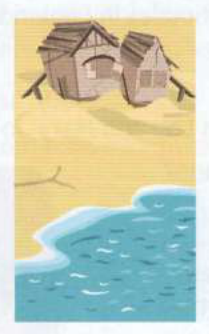
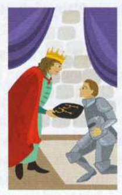
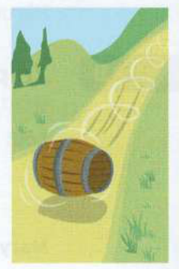

Bài tập
Nối phần đầu của mỗi câu với phần cuối tương ứng.
Những bức tranh này gợi cho bạn liên tưởng đến những thành ngữ nào?



Viết lại mỗi câu sau sử dụng từ trong ngoặc.
Hoàn thành mỗi thành ngữ trong bài đánh giá vở kịch dưới đây.
Although Lucy James's disappointing first play went down like a (1) ................................................ balloon, she has come up (2) ................................................ with her second play, now showing at the West Theatre. The dramatic plot went down a (3) ................................................ with the first-night audience. I thought it would be a (4) ................................................ for disaster casting the young Harry Catlin as an old man, but I was proved wrong. Catlin is (5) ................................................ a roll at the moment; his last play also delighted critics.
(Dịch nghĩa: Mặc dù vở kịch đầu tiên đầy thất vọng của Lucy James thất bại thảm hại [went down like a lead balloon], cô ấy đã đạt kết quả tốt ngoài dự kiến [come up trumps] với vở kịch thứ hai, hiện đang được công chiếu tại nhà hát West Theatre. Cốt truyện đầy kịch tính rất được khán giả đêm khai mạc đón nhận nồng nhiệt [went down a storm]. Tôi từng nghĩ việc chọn Harry Catlin trẻ tuổi vào vai một ông già sẽ là mối hiểm họa dẫn đến thảm họa [recipe for disaster], nhưng tôi đã nhầm. Catlin hiện đang trên đà thành công [on a roll]; vở kịch gần nhất của anh cũng làm hài lòng các nhà phê bình.)
Hãy xem lại Unit 56 và 59, vốn dựa trên các từ khóa dead và fall. Bạn có thể tìm thấy những thành ngữ nào khác liên quan đến sự thất bại ở đó?